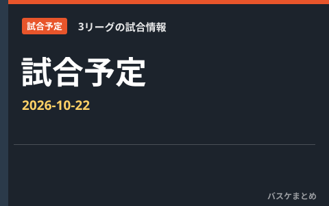

2026-10-22 試合予定｜B.PREMIER・B.ONE・B.NEXT

この日の試合を3リーグに分けて掲載します。日付・開始時刻は日本時間です。試合前のポジション別ランキングは公式の今季平均EFF（1試合当たり）です。
B.PREMIER
仙台 vs 横浜BC
19:05 予定・結果未確定 ／ 公式試合詳細
平均EFFのプレビューは未取得です。
A東京 vs 茨城
19:05 予定・結果未確定 ／ 公式試合詳細
平均EFFのプレビューは未取得です。
B.ONE
八王子 vs 東京U
19:05 予定・結果未確定 ／ 公式試合詳細
平均EFFのプレビューは未取得です。
B.NEXT
湘南 vs 山口
19:05 予定・結果未確定 ／ 公式試合詳細
ポジション別・今季平均EFFを見る
両チーム内の上位3人。同点で3人目に並ぶ選手も掲載します。出場試合数を併記し、出場未確認は確定出場を意味しません。
PG｜今季平均EFF
表は横にスクロールできます。出場状況もご確認ください。
| 順位 | 選手（所属） | 平均EFF | 出場試合数 | 出場状況 |
|---|---|---|---|---|
| 1 | 重冨 周希（湘南） | 9.2 | 6 | 出場未確認 |
| 2 | 伊藤 良太（湘南） | 6.0 | 6 | 出場未確認 |
| 3 | 井手 優希（山口） | 5.5 | 6 | 出場未確認 |
SG｜今季平均EFF
表は横にスクロールできます。出場状況もご確認ください。
| 順位 | 選手（所属） | 平均EFF | 出場試合数 | 出場状況 |
|---|---|---|---|---|
| 1 | 髙木 慎哉（湘南） | 11.2 | 6 | 出場未確認 |
| 2 | 重冨 周希（湘南） | 9.2 | 6 | 出場未確認 |
| 3 | 山口 力也（山口） | 8.2 | 6 | 出場未確認 |
SF｜今季平均EFF
表は横にスクロールできます。出場状況もご確認ください。
| 順位 | 選手（所属） | 平均EFF | 出場試合数 | 出場状況 |
|---|---|---|---|---|
| 1 | イブラヒム・ディアビ（湘南） | 10.7 | 6 | 出場未確認 |
| 2 | デモンテ・フラニガン（山口） | 9.0 | 2 | 出場未確認 |
| 3 | 神田 壮一郎（湘南） | 1.7 | 6 | 出場未確認 |
PF｜今季平均EFF
表は横にスクロールできます。出場状況もご確認ください。
| 順位 | 選手（所属） | 平均EFF | 出場試合数 | 出場状況 |
|---|---|---|---|---|
| 1 | ベルナルド・ダ・シルバ（山口） | 16.0 | 6 | 出場未確認 |
| 2 | ライアン・ローガン（湘南） | 11.5 | 6 | 出場未確認 |
| 3 | イブラヒム・ディアビ（湘南） | 10.7 | 6 | 出場未確認 |
C｜今季平均EFF
表は横にスクロールできます。出場状況もご確認ください。
| 順位 | 選手（所属） | 平均EFF | 出場試合数 | 出場状況 |
|---|---|---|---|---|
| 1 | ハイデン・コヴァル（湘南） | 24.5 | 6 | 出場未確認 |
| 2 | マイク・エドワーズ（山口） | 16.2 | 6 | 出場未確認 |
| 3 | ジャック・アンドリュー（湘南） | 11.0 | 6 | 出場未確認 |
欠場情報・ランキング対象外
- ヘイデン・ディークハンス（山口）：公式欠場・IL・停止。公式IL登録中（取得時点）。選手公示日：9月30日／リスト登録日：9月30日。次戦時点の解除・登録は再確認が必要
平均EFFは公式の今季平均（dt=avg）を使用し、通算合計を試合数で割って作り直しません。移籍選手は同一リーグの公式TOTALが確認できた場合に採用し、所属別平均の単純平均や合算は行いません。
公式試合詳細（取得 2026-10-14 02:15 JST）
公式用語集・EFF定義（取得時刻未記録）
公式スタッツ（今季平均・EFF）（取得 2026-10-14 02:19 JST）
公式インジュアリーリスト（取得 2026-10-14 02:14 JST）
公式クラブ登録選手一覧（取得 2026-10-14 02:19 JST）
公式クラブ登録選手一覧（取得 2026-10-14 02:19 JST）
出典：B.LEAGUE公式
B.PREMIER 公式日程・結果（取得 2026-10-14 02:19 JST）
B.ONE 公式日程・結果（取得 2026-10-14 02:19 JST）
B.NEXT 公式日程・結果（取得 2026-10-14 02:15 JST）
公式試合詳細（取得 2026-10-14 02:19 JST）
公式試合詳細（取得 2026-10-14 02:19 JST）
公式試合詳細（取得 2026-10-14 02:19 JST）
公式試合詳細（取得 2026-10-14 02:15 JST）